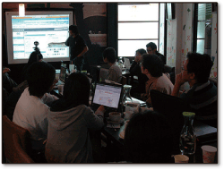
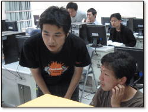
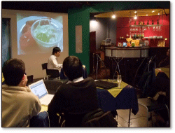
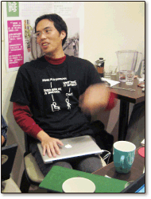
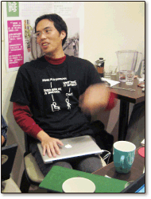
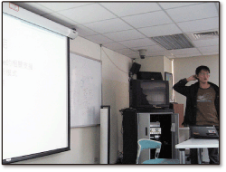
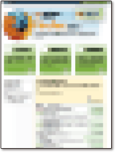

4/26 MozTW 摩茲連續聚 TP #1
MozTW 摩茲連續聚，以輕鬆歡樂無負擔的方式、要與大家一起提升彼此的網際體驗。每月一次、主題不限、時間地點都好談。歡迎提出建議！
這一集將在台北南京東路捷運佔附近的「果子咖啡」上映。
報名：活動已結束
- 時間：2009/4/26 14:00 ~ 18:00
- 地點：果子咖啡
- 費用：零，餐飲低消請自理 (100 元)
- 有無線網路、有電源。歡迎自備延長線與伙伴來電一下
候選主題可能有：
- 網路行銷的血淚辛酸史
- 柏強教召的血淚心酸史（柏強說是他唬爛的，這個不會有）
- Firefox 3.5
- GFX 最新進度
列在上面的不見得有、沒列的也搞不好會出現。也歡迎您準備三言兩語到場與大家分享！（歡迎上 Wiki 預約）
4/28 Mozilla Firefox 3.5 技術新功能概述
本活動將簡介 Firefox 3.5 中新增的相關網頁技術，以及對於網頁程式開發設計師 （Web Developers / Web Application Developers）來說，這些功能所能給使用者帶來的不同體驗。
報名網頁：活動已結束。下載投影片(PDF)
- 時間：2009/4/28 19:00 ~ 21:00
- 地點：果子咖啡
- 對象：Web Developer 與對瀏覽器未來發展有興趣的同好
- 人數：40人
- 費用：自負場地部份晚茶費用，150 元
講師簡介
- 簡冠庭（timdream），Mozilla 台灣社群在地化經理，統籌 Firefox 等軟體在地化相關事宜。
- 主要專長：網頁標準、網路應用程式開發（in (x)HTML, JavaScript, and php）。
- 連絡方式：timdream -at- mail -dot- moztw -dot- org
- 部落格：Blog: timdream
5/1 元智大學開放原始碼社團講座
主題：Firefox擴充套件開發解密
- 時間：2009/5/1 18:30 ~ 20:30
- 地點：元智大學資訊工程學系1009教室
- 費用：完全免費
講師簡介
 5/5 & 5/7 Mozilla Firefox 擴充套件開發 - 前導課程
5/5 & 5/7 Mozilla Firefox 擴充套件開發 - 前導課程
JavaScript 在 Web 2.0 時代搖身一變成為最受矚目的語言之一，除了開發 Web Application 外，JavaScript 還是 Firefox Extension 所使用的程式語言。本課程將從基礎的 JavaScript 開始介紹，逐步深入，讓學員能具備開發 Firefox Extension 所需要的基礎知識。
報名網頁：前導課程-上：活動已結束、前導課程-下：活動已結束
- 時間：2009/5/5 19:00 ~ 22:00（前導課程上）
2009/5/7 19:00 ~ 22:00（前導課程下） - 地點：台北市中正區公園路 30 號 3F
- 對象：對 JavaScript 有興趣的人
- 人數：每班約 25 人（實機操作）
- 平台：不限
- 費用：全程免費
講師簡介
- 高偉格（othree）為和多設計與優像數位之 contractor
- 主要專長：前端技術（JavaScript, HTML, CSS）
- 連絡方式：othree@gmail.com
- 部落格：http://blog.othree.net
5/9 Mozilla Firefox 擴充套件開發：入門篇
本課程介紹如何在 Firefox 下開發一個基礎的擴充套件：內容包含 Mozilla 平台下的 XUL 介面語言基礎、XUL 與 JavaScript 的整合、瀏覽器調整相關程式片段、XPCOM API 等基礎 Firefox 元件的方法，並介紹如何散播完成的附加元件。
本課程雖以 Firefox 為主，但所用之 Moziila 平台基礎技巧，亦可運用於跨平台 XULRunner 應用程式或附加元件之開發。應適合所有對 Mozilla 相關技術（包含如 Flock / Songbird 等 XULRunner 軟體）開發有興趣者。
報名網頁：活動已結束。課程講義
- 時間：2009/5/9 9:00 ~ 17:00
- 地點：台北市中正區公園路 30 號 3F
- 對象：資訊相關系所的學生，或對 Mozilla 平台下程式開發有興趣者
- 人數：每班約 25 人（實機操作）
- 平台：Windows/Mac/Linux 皆可，以 Windows 為主要示範平台
- 費用：全程免費
講師簡介
 5/23 Mozilla Firefox 擴充套件開發：進階篇
5/23 Mozilla Firefox 擴充套件開發：進階篇
本課程介紹是「Mozilla Firefox 擴充套件開發：入門篇」的進一階課程，介紹在 Mozilla 平台下進一步的程式開發。課程介紹進一步的擴充套件撰寫，例如選項的設置和調整、檔案的讀寫、XUL Tree Controls、與 XBL 等技術。
本課程雖以 Firefox 為主，但所用之 Moziila 平台基礎技巧，亦可運用於跨平台 XULRunner 應用程式或附加元件之開發。應適合所有對 Mozilla 相關技術（包含如 Flock / Songbird 等 XULRunner 軟體）開發有興趣者。
報名網頁：報名已額滿
- 時間：2009/5/23 9:00 ~ 17:00
- 地點：台北市中正區公園路 30 號 3F
- 對象：資訊相關系所的學生，或對 Mozilla 平台下程式開發有興趣者
- 人數：每班約 25 人（實機操作）
- 平台：Windows/Mac/Linux 皆可，以 Windows 為主要示範平台
- 費用：全程免費
講師簡介
5/24 大葉大學 MozTW 摩茲校園聚
摩茲校園聚活動為針對全校師生及校友，以自由軟體及 Firefox 套件在地化、Mozilla 相關自由軟體為主題，於校園內進行推廣及教學，促進彼此交流。
講座內容：Firefox 簡介、開放的網路世界、Mozilla 正體中文在地化專案、網際標準：CSS3 與 HTML5、網路未來實驗室：Mozilla Labs、如何參與 MozTW
主辦單位：大葉大學資訊管理學系暨系學會
- 時間：2009/5/24 9:00 ~ 17:00
- 地點：行政大樓 A404 資管系專用電腦教室
- 主辦單位：資訊管理學系暨系學會
- 報名地點：管院大樓 C203 資訊管理系辦公室
- 對象：大葉全校師生及校友
- 費用：每人100元（含午餐、講義）
- 講師：BobChao、timdream、othree、Irvin
- 活動總召：曹文豪（C303代理人研究室）
gFx: 你的火狐推廣平台
？？？？？？（即將發表，請密切注意！）